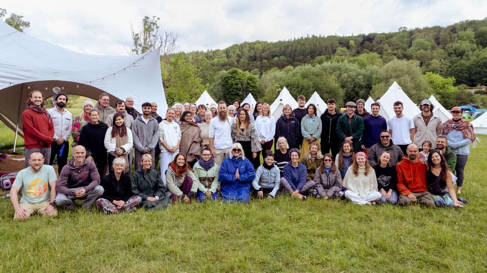

Can a Beginner Do a Vipassana Retreat?
Never meditated? You can still do a silent vipassana retreat. A teacher answers the common worries: sitting, silence, emotions, sleepiness, and whether you'll "fail".
Read · 3 min
Evening on retreat is a beautiful time. The day's work is almost done, the sun is going down over the meadow, and it's time for loving-kindness.
Strictly, they're different meditations. Vipassana is seeing reality as it is, the raw data. Mettā works with concepts: we imagine people and wish them well.
But we find, as other vipassana centres do, that they go together beautifully. Without some softness, practice can become dry. Too serious, tense in places. Mettā brings kindness into how you meditate: the tone you use with yourself when you catch the mind wandering, the way you hold your focus, not too tight, not too loose.
The most famous teaching on loving-kindness is the Mettā Sutta, in the Sutta Nipāta (Snp 1.8). It begins not with feelings but with behaviour: be capable and upright, easy to speak to, gentle and humble, content, living lightly. Then it opens out into the wish:
May they be happy and safe! May all beings be happy!
And it describes how far that wish should reach: to beings weak and strong, seen and unseen, near and far, born and yet to be born. As a mother would protect her only child with her life, so should one develop a boundless heart towards all beings.
Sit comfortably. Let the body relax. Breathe naturally.
1. Yourself. Begin with yourself. Not out of selfishness: you can't give what you don't have. Silently repeat:
May I be happy. May I be peaceful. May I be free from suffering.
Let it be felt, not just said. If it feels strange, that's normal. Keep going.
2. A benefactor. Someone who has helped you, a teacher, a grandparent. Picture them smiling. May you be happy. May you be peaceful. May you be free from suffering.
3. A friend. Someone you love easily.
4. A neutral person. The person at the shop, a fellow meditator whose name you don't know.
5. A difficult person. Start with someone mildly difficult, not your greatest enemy. You don't have to approve of what they did. Holding resentment is holding a hot coal. Mettā is putting it down.
6. All beings. Let it spread. Everyone in this place, this town, this country, the whole world. Animals, birds, insects. May all beings be happy.
Ten to twenty minutes is enough.
Vipassana without kindness can be cold. Kindness without wisdom can be sentimental. Together they make a balanced mind: clear, and warm.
The trained mind, the disciplined mind, is the happy mind. And a happy mind naturally wants others to be happy too.
We practise mettā every evening on our silent retreats. You can also read more of the Sutta Nipāta in our library, or listen to it read aloud.
May you be happy and well.
Practise this with a teacher, in silence, by the river. Seven days at Hardwick, 2027.
Book a placeHave a question about the practice? Ask Ananda, our Dhamma assistant.
Never meditated? You can still do a silent vipassana retreat. A teacher answers the common worries: sitting, silence, emotions, sleepiness, and whether you'll "fail".
Read · 3 min
An honest, respectful comparison of the S.N. Goenka 10-day vipassana course and a 7-day Mahasi-style insight retreat: technique, schedule, teacher contact, yoga, cost and waiting lists.
Read · 3 min
Packing list for a silent camping meditation retreat in the UK: clothes for 4:30am sits, bedding, meditation cushion, what to leave at home, and how to handle your phone.
Read · 3 minNew dates, early-bird places and short teachings from Dmitry, a few times a year. No spam; unsubscribe any time.